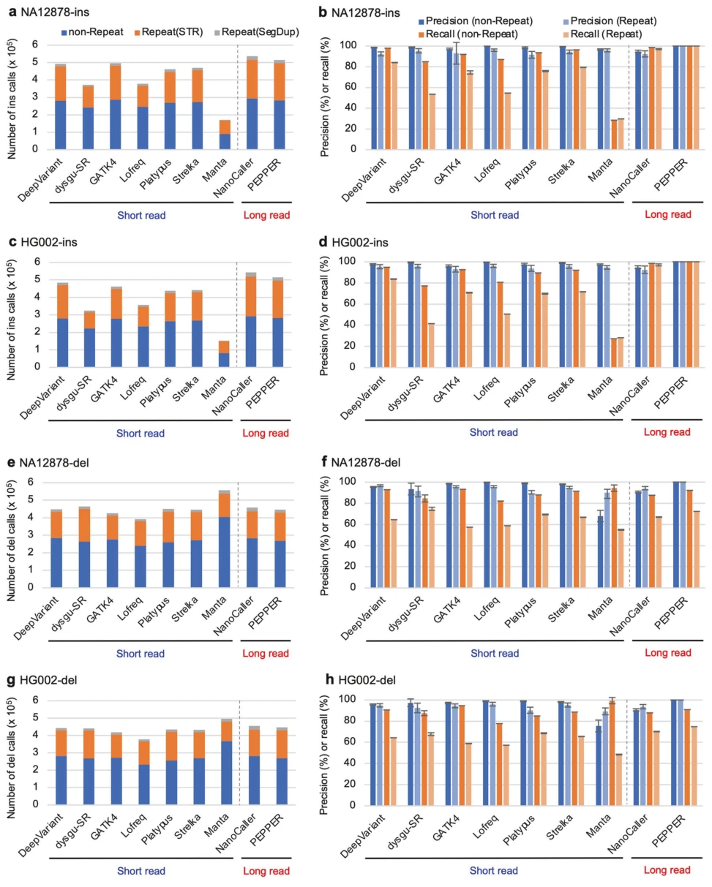
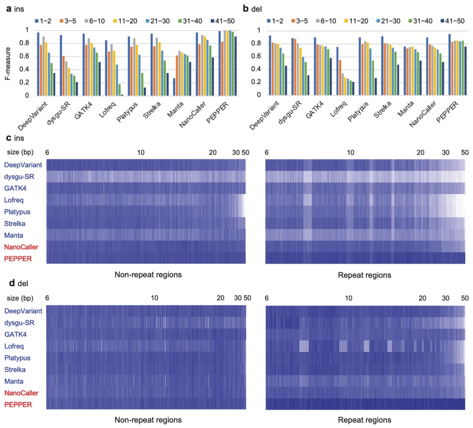
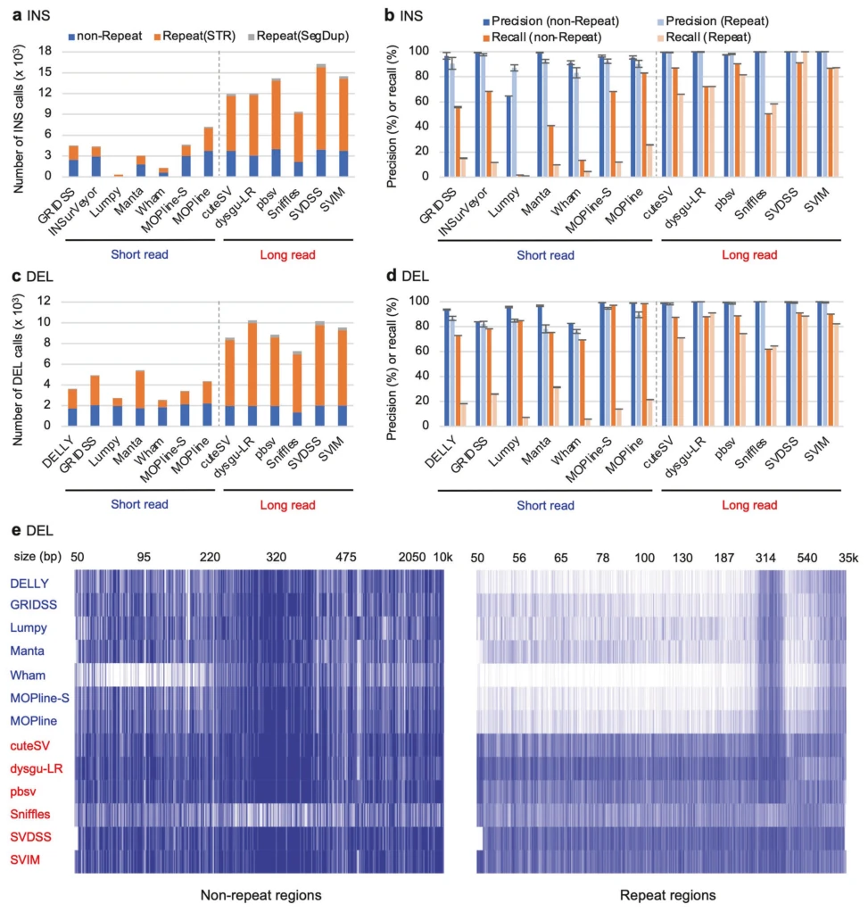

Fig. 1 Evaluation of SNVs called with short and long read-based SNV detection algorithms. a Number of SNV calls for NA12878. SNVs were detected with the indicated short read-based (DeepVariant, GATK4, Lofreq, and Strelka) and long read-based (NanoCaller and PEPPER/ DeepVariant) SNV detection algorithms using NA12878 Illumina short read or PacBio HiFi long read WGS data. The blue, orange, and gray bars indicate the SNV calls present in nonrepetitive (nonrepeat), STR (Repeat(STR)), and segmental duplication (Repeat(SegDup)) regions, respectively. b Precision and recall of SNV calls for NA12878. The SNV calls for each algorithm were evaluated with the NA12878 reference SNVs and by manual visual inspection. The blue and light blue bars indicate the precision values of SNVs present in nonrepeti

Fig. 2 Evaluation of indels called with short read-based and long read-based indel detection algorithms. a Number of insertion (ins) calls for NA12878. Insertions in the 1–50 bp size range were detected with the indicated short read-based (DeepVariant, dysgu-SR, GATK4, Lofreq, Platypus, Strelka, and Manta) and long read-based (NanoCaller and PEPPER/DeepVariant) indel detection algorithms using NA12878 Illumina short read or PacBio HiFi long read WGS data. Bars are represented as in Fig. 1. b Precision and recall of ins calls for NA12878. Indel calls for each algorithm were evaluated with the NA12878 reference indels and by manual visual inspection. Bars are represented in Fig. 1. c Number of ins calls for HG002. d Precision and recall of ins calls for HG002. e Number of deletion (del) call

Fig. 3 Evaluation of insertion calls by size in NA12878. a Accuracy for indel insertion calls across sizes in NA12878. F-measures of insertion calls for the indicated short read-based and long read-based algorithms are shown across size ranges with color bars (blue: 1 and 2 bp, orange: 3−5 bp, gray: 6−10 bp, yellow: 11−20 bp, cyan: 21−30 bp, green: 31−40 bp, black: 41−50 bp). b Accuracy for indel-deletion calls across sizes in NA12878. The F-measures of the deletion calls for the indicated algorithms are shown in a. c The distribution of 6−50 bp in the TP calls matched that of the NA12878 reference across sizes. For NA12878 insertions called with the indicated short read-based (marked with blue letters) and long read-based (marked with red letters) indel detection algorithms, the reference

Fig. 4 Evaluation of SVs called with short read-based and long read-based SV detection algorithms. a Number of insertion (INS) calls for NA12878. INSs and duplications (DUPs) ≥50 bp were detected with the indicated short-read-based (GRIDSS, INSurVeyor, Lumpy, Manta, Wham, MOPline-S, and MOPline) and long-read-based (cuteSV, dysugu-LR, pbsv, Sniffles, SVDSS, and SVIM) SV detection algorithms using NA12878 short-read or long-read WGS data. DUP calls were converted to INSs. Bars are represented as in Fig. 1. MOPline-S indicates MOPline- 7t in the single sample mode. b Precision and recall of INS calls for NA12878. SV calls for each algorithm was evaluated with the NA12878 reference SVs and by manual visual inspection. Bars are represented as in Fig. 1. c Number of deletion (DEL) calls with ≥50